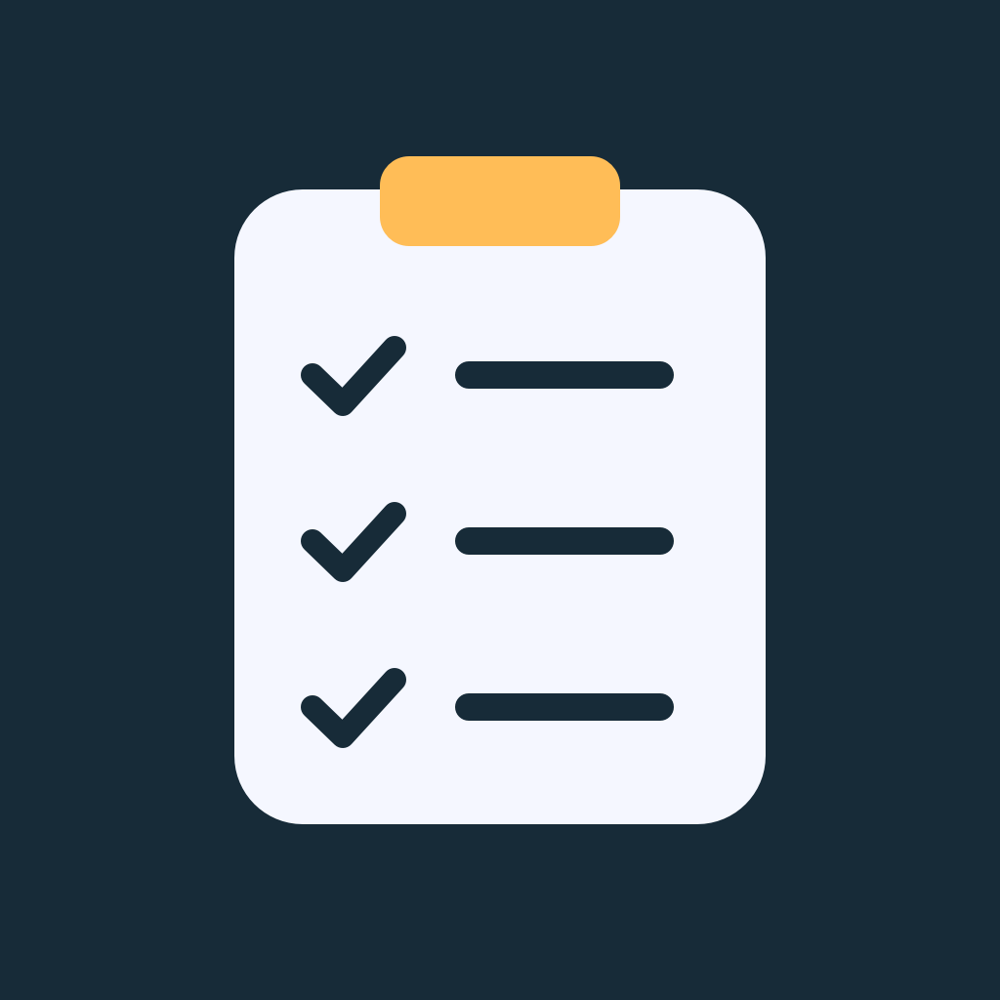
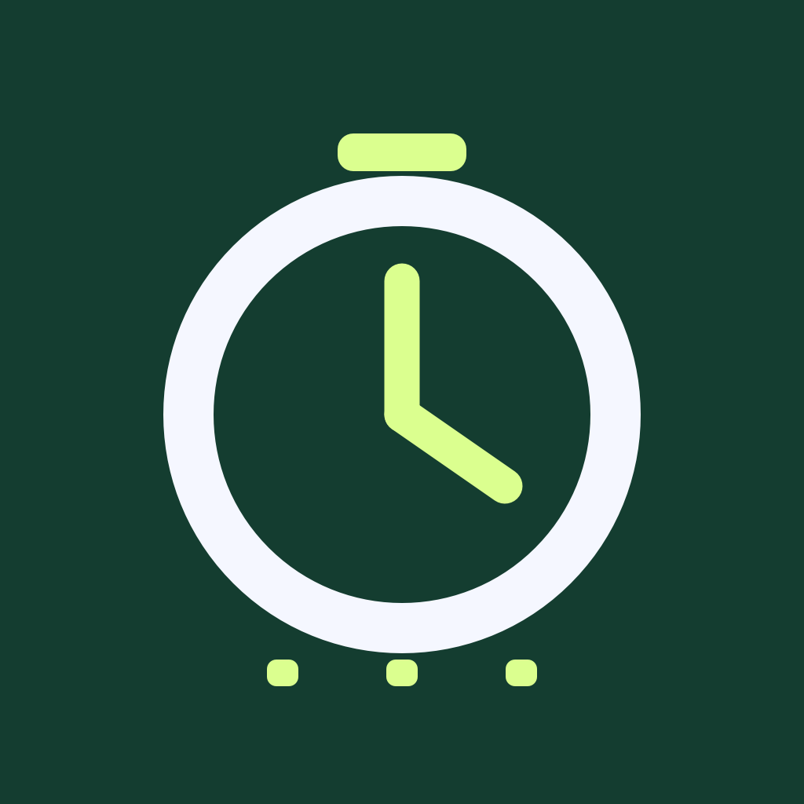
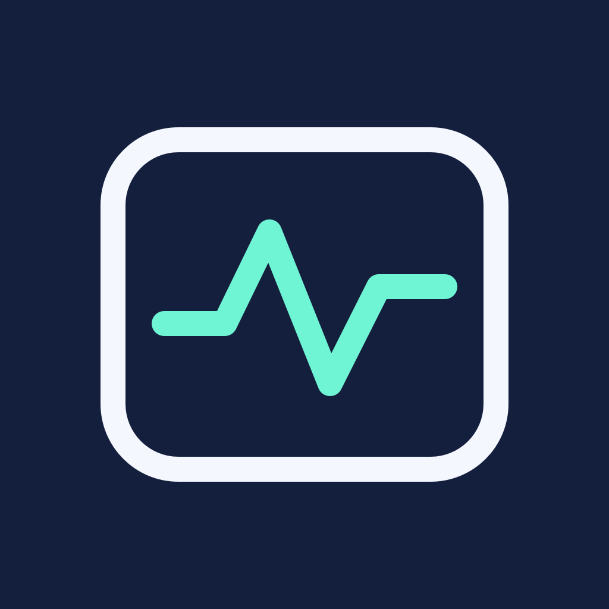

Workshop Wrist
Your checklist, close at hand.
Progress and supportApple Watch projects for everyday records, checklists and focused updates.
Eleven researched Watch projects are being developed and prepared for review. The pages below describe current work; App Store availability has not been announced.

Your checklist, close at hand.
Progress and support
Keep the match record on your wrist.
Progress and supportA clear record of the care you entered.
Progress and supportYour own cards, ready for a short review.
Progress and support
Selected job updates, with their dates.
Progress and supportPublication receipts and measured updates.
Progress and supportFor a project question or testing inquiry, email Isaiah. We will confirm availability when a release is ready.